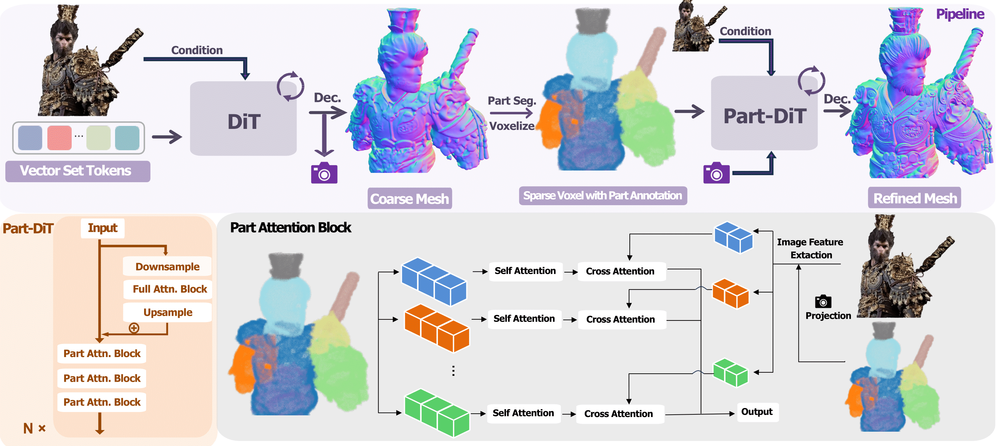
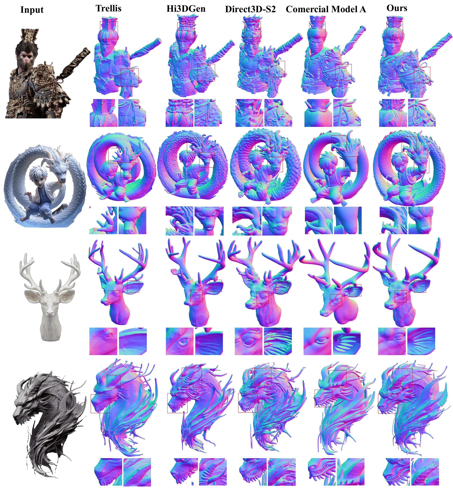

With the growing demand for high-fidelity 3D models from 2D images, existing methods still face significant challenges in accurately reproducing fine-grained geometric details due to limitations in domain gaps and inherent ambiguities in RGB images. To address these issues, we propose Hi3DGen, a novel framework for generating high-fidelity 3D geometry from images via normal bridging. Hi3DGen consists of three key components: (1) an image-to-normal estimator that decouples the low-high frequency image pattern with noise injection and dual-stream training to achieve generalizable, stable, and sharp estimation; (2) a normal-to-geometry learning approach that uses normal-regularized latent diffusion learning to enhance 3D geometry generation fidelity; and (3) a 3D data synthesis pipeline that constructs a high-quality dataset to support training. Extensive experiments demonstrate the effectiveness and superiority of our framework in generating rich geometric details, outperforming state-of-the-art methods in terms of fidelity. Our work provides a new direction for high-fidelity 3D geometry generation from images by leveraging normal maps as an intermediate representation.

Overview of the Hi3DGen framework.

Comparison With Other Methods.
Select a method from the dropdown menu to compare. Drag to rotate.
● Scroll to zoom in/out
● Drag to rotate
● Press "shift" and drag to pan
 *
*